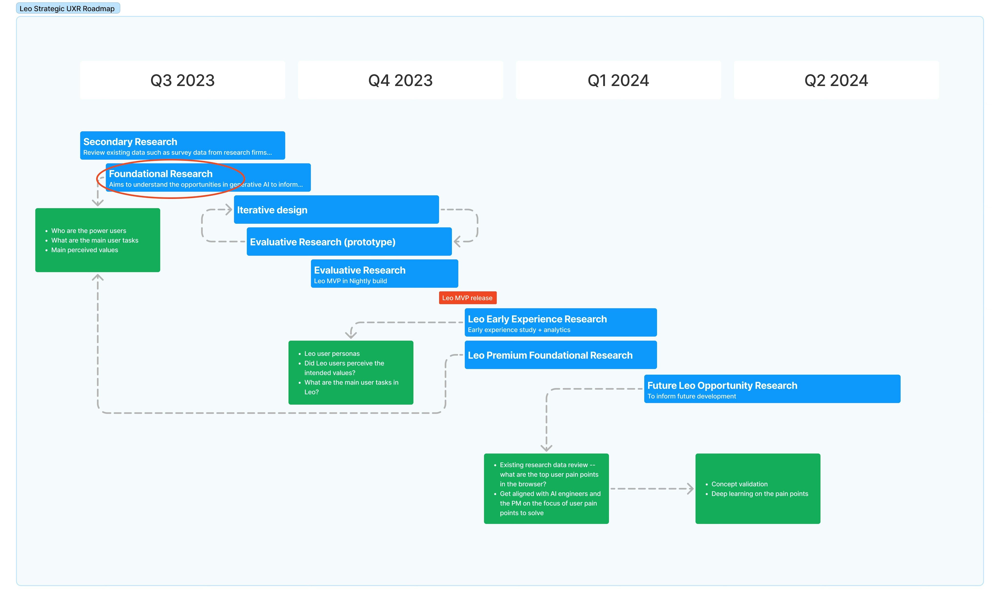
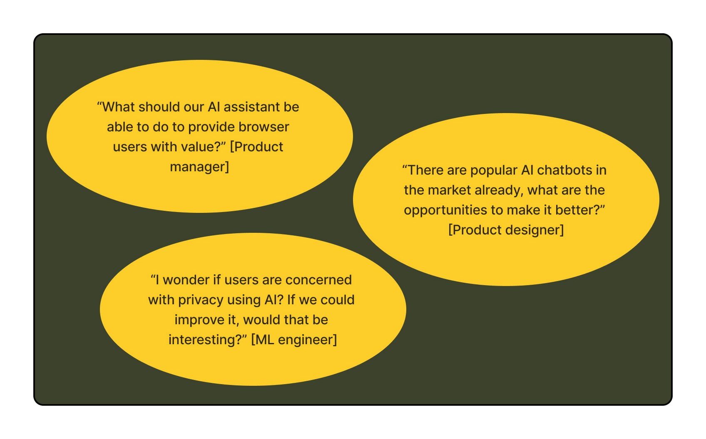
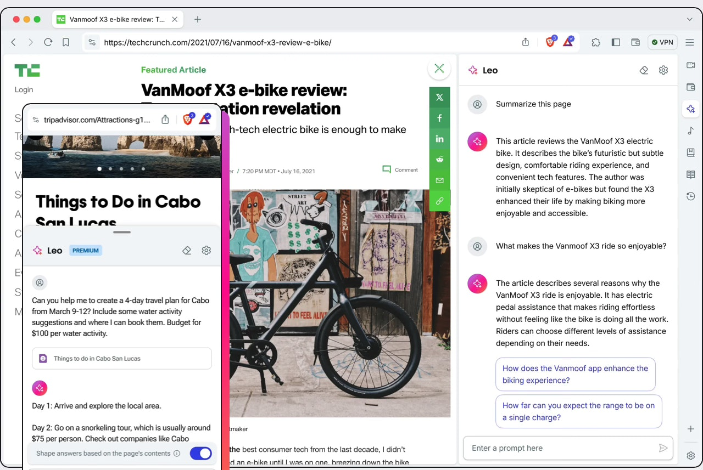
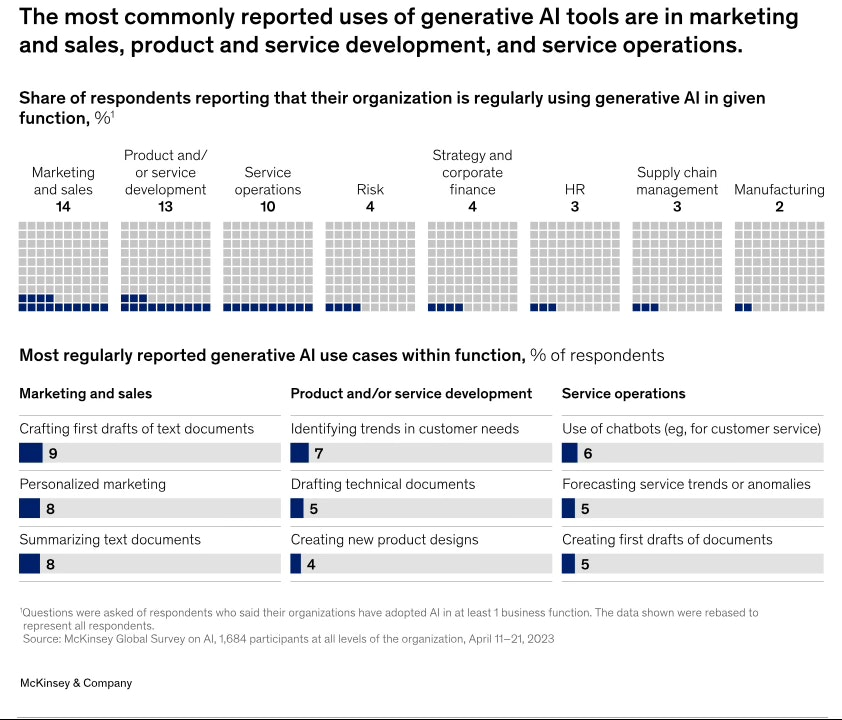

Brave Leo AI Exploratory Research
AI Assistant User Research and Feature Strategy
Background
In 2023, Brave developed its native AI assistant (Leo) to enhance the browser experience. This artificial intelligence (AI) platform enables users to optimize healthcare delivery through predictive analytics. It is designed to help hospital networks and clinicians reduce costs while maintaining high-quality care through predictive analytics.
Challenges
The current system is in its early stage and requires significant UI support, making users reluctant to adopt. This resulted in low engagement with AI features due to a lack of understanding of how they could be useful. The challenge was to identify meaningful use cases and improve the system usability and the overall user experience.
Stakeholder Alignment
I met with the product manager, product designers, data scientists, and engineering team members to align everyone on the research objectives and approach. We established a shared understanding of key AI capabilities and limitations to frame our research questions effectively.
Research Objectives
- Understand user goals and motivations in their current browser workflow
- Identify potential AI integration points that would provide value to users
- Evaluate preliminary AI assistant functionality to ensure it effectively enhances usability
Research Method
- Observational studies of current browser usage
- Semi-structured interviews with diverse user segments
- Prototype testing with think-aloud protocol
Research Framework
I applied the Jobs To Be Done (JTBD) framework to uncover user problems and motivations, identifying workflow patterns that align with user mental models and expectations. This helped us understand the contextual needs, functional goals, and emotional needs that would inform thoughtful AI integration.
Recruiting Criteria
Heavy Browsers
- Uses browser 6+ hours daily
- Multiple tabs and workflows
- Research-heavy tasks
Content Creators
- Writers, developers, designers
- Uses browser for creative work
- Varied technical expertise
AI Enthusiasts
- Experience with AI tools
- Can provide comparative insights
- Early adopters of technology
Research Design (Outline)
- Task-based observations of current browser usage
- Interviews about pain points in existing workflows
- Introduction to AI assistant concept with prototype demos
- Guided exploration of potential use cases
- Preference ranking of AI features
Data Analysis
Thematic Analysis - Identifying Patterns & Themes in Qualitative Data
Affinity Mapping - Clustering User Insights by Behavior & Motivation
User Journey Mapping - Tracking Steps in Completing Browser Tasks & Key Friction Points
Key Insights
1. Context-awareness is critical for AI adoption
Job: Maintain cognitive flow while working
Users valued AI that understood their current task without explicit instruction
Pain point: Constantly having to explain context to AI tools disrupts workflow and creates cognitive load
Quote: "I don't want to have to explain what I'm doing every time - it should just know based on my open tabs and searches."
2. Trust is built through transparency and control
Job: Maintain privacy while benefiting from AI
Users were concerned about data usage and wanted clear boundaries on what AI could access
Pain point: Unclear data handling practices created hesitation to fully engage with AI features
Quote: "I want to know exactly what it's looking at and have a way to turn it off completely when working with sensitive information."
3. Integration within existing workflows is preferred over new paradigms
Job: Enhance productivity without learning new systems
Users preferred AI features that augmented familiar browser interactions rather than creating entirely new ones
Pain point: New AI interfaces often required significant behavior change that users were reluctant to adopt
Quote: "I don't want another chat window - I want it to just make what I already do faster and easier."
Feature Prioritization
Based on our research, we prioritized AI features according to user value and technical feasibility:
High Priority
- Page summarization with key points extraction
- Contextual search assistance based on currently viewed content
- On-page content explanation and clarification
Medium Priority
- Cross-tab content synthesis and comparison
- Writing assistance for forms and social media
- Code explanation and generation for developers
Future Exploration
- Proactive information gathering based on user intent
- Visual content generation and editing
- Advanced research assistance for complex topics

Impact
- Product roadmap implementation: Design focused on the top priority AI features that aligned with natural user workflows
- Privacy-centric design approach: Created clear mental models for users regarding data usage and control
- Progressive disclosure system: Developed a framework for introducing AI capabilities without overwhelming users
Reflection
This exploratory research provided valuable insights into how users conceptualize and interact with AI in their browsing experience. The key learning was that successful AI integration requires a delicate balance between proactive assistance and respecting user control. By focusing on enhancing existing workflows rather than creating entirely new interaction paradigms, we were able to identify opportunities for AI that provided genuine value without disrupting established user behaviors.
Moving forward, continuous evaluation will be essential as users' understanding and expectations of AI evolve rapidly. The research established a foundation for iterative improvement that balances innovation with usability.